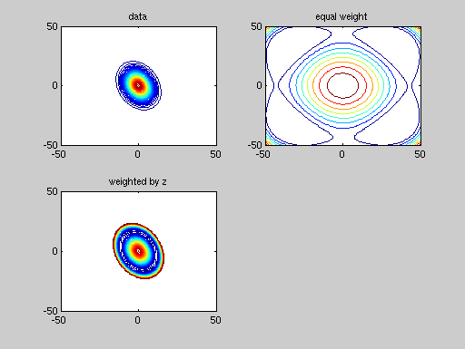

polyfitweighted2.m: Find a least-squares fit of 2D data z(x,y) with an n th order polynomial, weighted by w(x,y) .
polyval2.m: Evaluate 2D polynomial produced by polyfitweighted2.m.
By S.S. Rogers (2006)
P = polyfitweighted2(X,Y,Z,N,W) finds the coefficients of a polynomial P(X,Y) of degree N that fits the data Z best in a least-squares sense. P is a row vector of length (N+1)*(N+2)/2 containing the polynomial coefficients in ascending powers, 0th order first.
P = [p00 p10 p01 p20 p11 p02 p30 p21 p12 p03...]
e.g. For a 3rd order fit, the regression problem is formulated in matrix format as:
wZ = V*P or
2 2 3 2 2 3
wZ = [w wx wy wx xy wy wx wx y wx y wy ] [p00
p10
p01
p20
p11
p02
p30
p21
p12
p03]X,Y must be vectors Z,W must be 2D arrays of size [length(X) length(Y)]
based on polyfit.m by The Mathworks Inc. - see doc polyfit for more details
Class support for inputs X,Y,Z,W: float: double, single
Note: P is not in the format of standard Matlab 1D polynomials. Use polval2.m to evaluate the polynomial in this format, at given values of x,y.
Z = POLYVAL2(P,X,Y) returns the value of a 2D polynomial P evaluated at (X,Y). P is a vector of length (N+1)*(N+2)/2 containing the polynomial coefficients in ascending powers:
P = [p00 p10 p01 p20 p11 p02 p30 p21 p12 p03...]
e.g. For a 3rd order fit, polyval2.m evaluates the matrix equation:
Z = V*P or
2 2 3 2 2 3
Z = [1 x y x xy y x x y x y y ] [p00
p10
p01
p20
p11
p02
p30
p21
p12
p03]Note: P is not in the format of standard Matlab 1D polynomials.
X and Y should be vectors; the polynomial is evaluated at all points (X,Y).
Class support for inputs P,X,Y: float: double, single
Define some data z: Calculate best fit cubic with various weights:
- equal weight on all data points
- weight by the data itself
use polyval2.m to evaluate and plot best fit polynomial in each case. See help polyval2.m
x=[-50:50]'; y=[-50:50]; z=exp(-(x.^2*y.^0/100+x*y/140+x.^0*y.^2/50)); P_equalweight=polyfitweighted2(x,y,z,4,ones(101)); P_weighted=polyfitweighted2(x,y,z,4,z); figure subplot(2,2,1) contour(x,y,z,[0:0.02:1]) title('data') subplot(2,2,2) contour(x,y,polyval2(P_equalweight,x,y),[0:0.02:1]) title('equal weight') subplot(2,2,3) contour(x,y,polyval2(P_weighted,x,y),[0:0.02:1]) title('weighted by z')